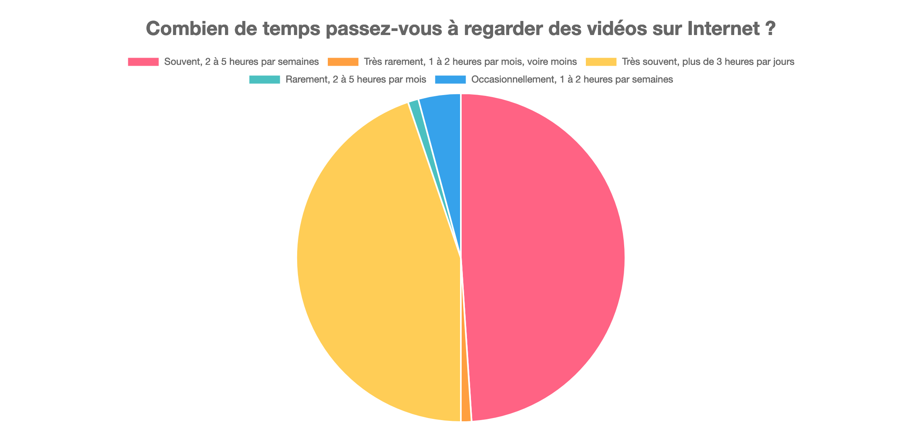

Résumé
Depuis des dizaines d'années maintenant, Internet a changé notre façon de s'informer, de communiquer, et de partager. Parmis les différents types de contenu, l'audiovisuel a pris une place omniprésente dans notre naviguation quotidienne en ligne. Aujourd'hui grâce aux réseaux sociaux et aux plateforme de partage de contenu, il est devenu très facile de partager des vidéos librement et gratuitement. Les plateformes de partage de vidéos se sont donc multipliées et la création de contenu audiovisuel s'est démocratisée avec un véritable business à la clé, notamment grâce à la publicité. La publicité en ligne a permis de mettre en place un modèle économique universel basé sur la demande des annonceurs et le trafic des sites web. Une visite se traduisant rapidement en Euros, et le trafic quotidien des sites web devenant de plus en plus conséquent, ce modèle économique a pu devenir un des pilliers de la démocratisation d'Internet.
Notre récente étude à permis de constater que la consommation de vidéo en ligne prend énormément de place dans la vie des jeunes. Cette étude a été menée de 2019 à 2020 sur un échantillon de 100 personnes allant de 18 à 35 ans. C'est en partie sur celle-ci que nous nous appuierons pour construire notre argumentation. Les résultats complets de l'étude sont disponible ici.

Des suites de cette démocratisation, plusieurs sociétés ont émergées, devenant aujourd'hui de véritables géants du web, au point d'être omniprésents sur la toile. Du moteur de recherche à l'hébergement web, en passant par le réseau social, ces géants du web représentent aujourd'hui les outils de référence en matière de création, de partage et d'hébergement de contenu. Depuis quelques années maintenant, ces entreprises sont sujettes à diverses polémiques relatives au respect de la vie privée des utilisateurs et à la création d'un monopole. En effet le pouvoir de ces sociétés pose plusieurs problèmatiques majeures : du fait de la diversité de leur activité, ces sociétés peuvent écraser la concurrence en mettant davantage leurs produits et services en avant. De plus, leur politique de confidentialité est souvent très intrusive et leur donne un important droit de regard et d'exploitation sur les données qui leur sont confiées, notamment sur le contenu hébergé. Ce qui peut alors se traduire par de la censure et revente de données.

« YouTube peut mettre fin à votre accès ou à celui de votre compte Google à tout, ou à une partie du service si YouTube estime, à sa seule discrétion, que la fourniture du service qui vous est destiné n’est plus viable commercialement »
Ces géants du web ont néanmoins permis de faire avancer le web et son modèle économique. Le concept de réseau social ayant également beaucoup évolué, des alternatives ont vu le jour, apportant diverses solutions aux problèmatiques soulevées.
Mais la publicité représente-t-elle encore aujourd'hui l'unique moyen fiable d'être rémunéré sur Internet ? Les géants du web sont-ils réellement indétrônables ? Nous parlerons ici des problèmatiques rencontrées régulièrement par les utilisateurs ainsi que des solutions existantes et ce qu'elles permettent d'accomplir à terme.